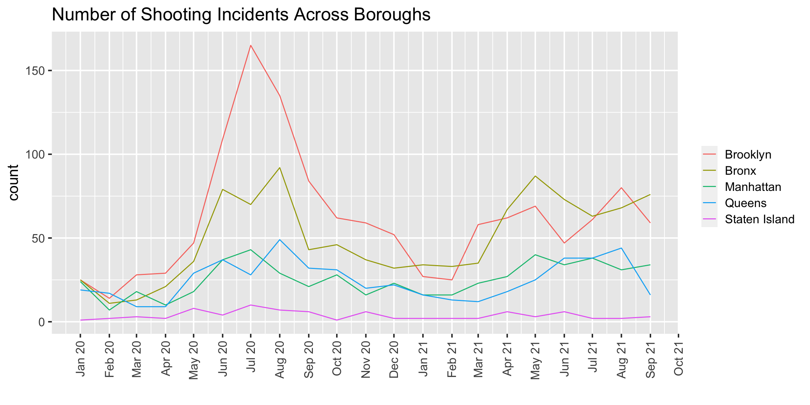

Chapter 5 Results
5.1 COVID-19 Dataset
We will draw two headmaps to visualize what are the vaccination rate in different ages, ethnicities in different boroughs and citywide.
From the above plot we can observe percentage of people fully vaccinated in different ages, ethnicities in different boroughs and citywide.
For different age groups, teenagers and adults have the highest vaccination rate since most of them are required to do so. While kids have lower rates than any other group because some vaccines are not suitable for kids.
For ethnicity, Asian people seem to be more willingly to be vaccinated. While others are basically the same.
For boroughs, Manhattan has the highest vaccination rate for most age groups and ethnicities. The reason behind this might be that Manhattan have more regulations for vaccinations and have higher population density. While in low population density area like Staten Island, people may not be so eager to get vaccinated.
From the above plot we can observe percentage of people vaccinated in different ages, ethnicities in different boroughs and citywide.
The results do not change a lot from the last one. Teenagers and adults still have the highest vaccination rate and Manhattan has the highest vaccination rate for most age groups and ethnicities.
One interesting fact is that the rate is much higher than rate for fully vaccinated people. An explanation may be that NYC only offer 100$ bonus for the first dose and many people do not think it is necessary to get a second dose.
5.2 Crime Dataset
5.3 Air Quality Dataset
There are three different measures of air quality: Fine Particulate Matter (PM2.5), Nitrogen Dioxide (NO2) and Ozone (O3). In this part, we draw three boxplots and three lineplots to visualize how these three kinds of data distribute in different boroughs and how they change over the time.
First, we choose PM2.5 to draw the plot, which is the most common indicator for air quality.

From the plot we can observe that Manhattan and Bronx have the highest mean PM 2.5 value , while Staten Island has a better air quality. Manhattan’s PM 2.5 value also varies the most. Besides, Bronx has the most outliers which indicates that there are some places are heavily polluted. The reason behind this might be that Manhattan and Bronx have higher population and less land, which could result in more toxic waste in air.
From the lineplot we can also observe that PM 2.5 in air quality is periodical, which is usually lower in the begining of a year. We can also conclude that for all boroughs, the air quality is getting better and better from 2016 to 2018 as the values are descending.

In the second graph, we use a different measure NO2, and the results are basically the same with the last one depite that Bronx is the leading polluted borough in this measure.
From the lineplot we can also observe that NO2 in air quality is also periodical. One difference from the above one is that the NO2 is usually lower in the middle of a year and peaks in the end of the year. We can also conclude that for all boroughs, the air quality is getting better and better from 2016 to 2018 as the values are descending.

Ozone (O3) has become the most dangerous toxic air particles in recent years, which could do serious damage to human lungs. In the third graph, we visualize how O3 data distributed in different boroughs. The results are very different from the last two. Queens becomes the most polluted borough with most outliers. While Mahanttan and Bronx who have most NO2 and PM 2.5 have least O3 in air. We could not find a reason for this observation. However, what we can be sure is that we should use different measures to indicate how air is polluted since different particles may not have the same distributions in boroughs.
The lineplot does not show much information since there are not enough data. We can not be sure if O3 in air quality is also periodical. However, we can observe that for all boroughs, the air quality is first getting better and then getting worse from 2016 to 2018 when considering O3 values. And we should be more careful about O3.